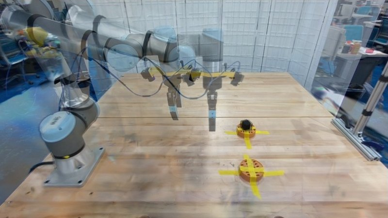

One human demo, rendered into robot data
I moved a cube between two fixtures on a real UR5e bench while two calibrated RealSense cameras recorded. The scene was scanned with a phone, the cube was tracked in 3D, and the motion was re-rendered as a UR5e + Robotiq demonstration that can be varied and scaled without teleoperation.
Scan, Track, Render
Drag the slider: the three panels show the same moment. 01 is the real human demo, 02 the cube’s tracked 6-DoF pose drawn back onto the real frame, and 03 the robot replay rendered from the same camera.
The replay in 3D
The same generated demonstration as an interactive scene: the robot URDF, the cube as the Gaussian splat cut from my phone scan, the scanned bench, and both camera frustums showing their rendered views.

Drag to orbit, scroll to zoom. Built on viser, the same playback format as the Real2Render2Real project page.
How it works

01Scan
A Gaussian splat of the bench from a phone video. I registered the RealSense frames into its COLMAP model to recover metric scale and the scan-to-robot transform: two independent estimates agree to 0.2%.

02Track
The cube’s pose per frame from both depth cameras: the scanned cube model fitted with ICP, re-detected on fast lifts and kept consistent across the cube’s 24 symmetric orientations.

03Embody
A UR5e + Robotiq 2F-85 model in the calibrated base frame, with the gripper mount fitted against the real images, so simulated cameras and robot line up with the real ones.

04Render
IsaacLab replays the object motion kinematically. IK follows a grasp on the cube; a feasibility filter rejects rollouts with IK error, joint-limit violations or finger–fixture contact.
One demo, many demos
Each rollout re-samples the cube’s start pose, warps the demonstrated path to it, and randomizes lighting, camera pose and table appearance. The background is a 360° render of the lab from the same phone scan.
Generated rollouts from the single demonstration (front camera).

Trajectory interpolation on the real front view: the tracked demo (teal) and the warped variants the generator samples (amber).
Engineering notes
- Metric alignment without a metric scanner. The phone scan has arbitrary scale; registering the calibrated RealSense views into it gave scale and pose with a 4 mm median residual and camera centres within 8 mm.
- Replacing the tracker where it failed. The paper’s feature-based tracker slid off this small black cube onto the fixture. Calibrated depth from two views made a geometric tracker the more reliable tool, validated in the camera it never used.
- Porting to a new embodiment. The released pipeline targets YuMi and Franka; I built the UR5e + 2F-85 model, scene, IK and simulator, and fixed several upstream issues along the way (NaN gradients with missing depth, a hard-coded GPU architecture).
Credit and status
This is my reproduction of Real2Render2Real (Yu, Fu et al., 2025) on my own bench and data. The robot motion shown is rendered, not executed on hardware. Training a policy on the generated data and evaluating it on the real UR5e is the next step.